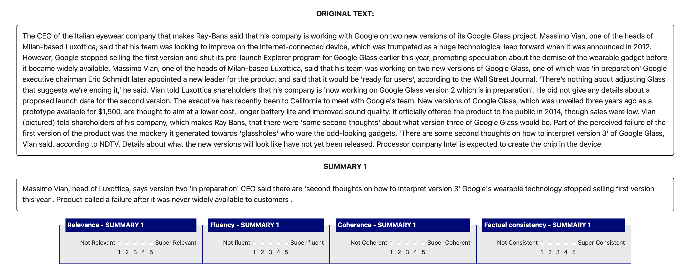

Human evaluation of text summarization IMPORTANT INFORMATION: We are conducting this research on the quality of text simplification, summarization, and grammatical error correction. This is the second study and looks at text summarization. It is not to be confused with the text simplification study you may have taken part in previously, as the two tasks are different. Here you will be asked to read some texts and their summarized versions and rate them according to the criteria specified below. Some of the content you will see is human generated, other is AI generated, but you will not be told which is which as this is a blind research. As the interface is not mobile / tablet friendly, we ask that you complete this study using a laptop or desktop. This summarization research will take about 8 hours, and you should only start working on this research if you can commit to do it in full. To make things simpler, we are splitting these 8 hours into 8 separate studies taking about one hour each, which you can take on separate days. All these 8 one-hour studies should be completed by the end of Thursday 11th May. This is study part 1 of 8. A link to the following 7 studies will be sent once you have accepted this commitment. Base pay is £12 per hour. Once you've completed the 8 studies, we will review the work, and if of a satisfactory quality, we will award a 10% discretionary bonus and invite you to take part to our last study which will look at grammatical error correction. This separate research will take another 4 hours and is optional, you can decide not to continue once you've completed the 8 one-hour studies on text summarization. Work will be reviewed as it comes through during UK working hours (excluding weekends and bank holidays). If at any point you have any questions or we have anything we'd like to communicate, feel free to message us though the Prolific messaging service, we will also use it if we need to get in touch, and potentially to discuss continuation of your work into the following studies. In the study you're about to start, which we estimate should take one hour, you will be shown 12 or 13 pieces of text taken mostly from older news articles. Alongside each of them, you will be shown 4 different possible summaries of the text. The purpose of text summarization is to make the text shorter and more concise without changing its overall meaning, omitting unimportant details while retaining the key content of the story. We ask that you carefully read the original text and rank each of the 4 summaries according to the following metrics, which are defined below. To ensure the best quality of outcome, we allocated roughly 5 minutes per page (note: this is significantly longer than we allowed for in the previous study on text simplification you may have taken, because the texts in this study are longer and more complex and we do not want you to feel rushed, as we value quality of output). A summary box would look as follows (you will have 4 of these per source text). The definition of the criteria you will be asked to rate the summaries on is below. Please ensure you familiarise yourself with the criteria before proceeding. 
NOTE: please take a screeshot of this page for your future reference as you may not be able to access it again once you start the survey. -
Relevance
This assesses the quality of selection of important content from the source. The summary should include only important information from the source document. Please penalize summaries which contain redundancies and excess information. Relevance is assessed on a 5-point Likert scale from 1 (Not Relevant) to 5 (Super Relevant) -
Fluency
This assesses the quality of individual sentences. Sentences in the summary should have no formatting problems, capitalization errors or obviously ungrammatical sentences (e.g., fragments, missing components) that make the text difficult to read. Fluency is assessed on a 5-point Likert scale from 1 (Not Fluent) to 5 (Super Fluent) -
Coherence
This assesses the collective quality of all sentences. The summary should be well-structured and well-organized. The summary should not just be a heap of related information, but should build from sentence to sentence to a coherent body of information about a topic. Coherence is assessed on a 5-point Likert scale from 1 (Not Coherent) to 5 (Super Coherent) -
Consistency
This assesses the factual alignment between the summary and the summarized source. A factually consistent summary contains only statements that are entailed by the source document. Summaries that contain hallucinated facts (information which is not present in the source document) should be penalized. Consistency is assessed on a 5-point Likert scale from 1 (Not Consistent) to 5 (Super Consistent)
NOTE: please take a screeshot of this page for your future reference as you may not be able to access it again once you start the survey.